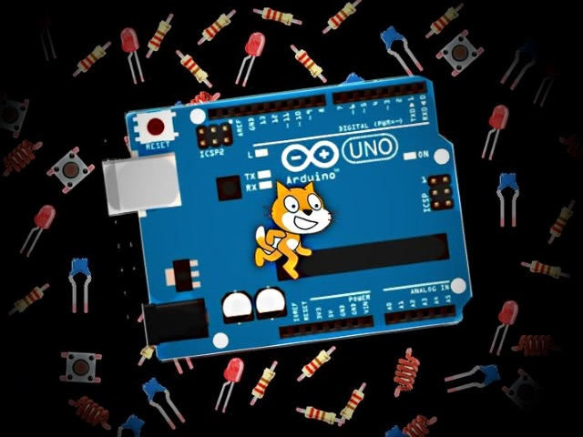

回 CODEDATA 專欄
專欄文章：mBlock & Arduino

以此處文件為三分之一基礎，進一步擴充的書籍
《用 mBlock 玩 Arduino - Starting from Scratch》
，2015 年上市的，還有需要的話可以加減參考 … XD
從 mBlock 官方 Github 找到 2.1.5 各版本的網址：
https://goo.gl/I4VYQG
為什麼會想玩 Arduino？我想了很久，或許是因為在程式設計這條路上，多年來累積了點學習上的自信，另一方面，Ardunio 有不少電路模組，在入門時可減輕對電子電路理解上的負擔，而最想試試的是使用圖型化程式語言來控制 Arduino，因為之前使用圖型化程式語言的經驗告訴我，它們總會帶來一些不同的設計想法。
mBlock & Arduino
就當做是一種挑戰吧！重新探索我曾經離開的領域 … XD
mBlock & Arduino（1）哈囉！LED！
mBlock & Arduino（2）點亮外接 LED
mBlock & Arduino（3）利用按鍵控制 Scratch 貓咪
mBlock & Arduino（4）利用 PWM 模擬類比訊號
mBlock & Arduino（5）可變電阻、ADC 與節拍器
mBlock & Arduino（6）使用蜂鳴器來打節拍
mBlock & Arduino（7）七段顯示器之 HELLO！
mBlock & Arduino（8）光敏電阻、亮度感應器與光線追蹤器
mBlock & Arduino（9）伺服馬達控制
mBlock & Arduino（10）mBlock 2.1.4 與 Arduino IDE
mBlock & Arduino（11）認識紅外線接收與發射
mBlock & Arduino（12）使用超音波感應器測量距離
mBlock & Arduino（13）使用搖桿控制
mBlock & Arduino（14）使用人體動作感應器
mBlock & Arduino（15）認識電晶體與繼電器
mBlock & Arduino（16）控制步進馬達
mBlock & Arduino（17）四位數七段顯示器
mBlock & Arduino（18）74HC595 與七段顯示器
mBlock & Arduino（19）透過網路調節 LED 亮度
mBlock & Arduino（20）探討 Me-Baseboard 與各模組相容性
mBlock & Arduino（21）使用 Me 藍牙模組
mBlock & Arduino（22）使用 Me RGB LED 模組打地鼠
mBlock & Arduino（23）使用 Me 搖桿模組打地鼠
mBlock & Arduino（24）使用 Me 七段顯示器模組計分
mBlock & Arduino（25）實作超音波感應器雷達
mBlock & Arduino（26）Me 動作、光線感應器實作小夜燈
mBlock & Arduino（27）Me 音量感應器實作特效燈
mBlock & Arduino（28）Me 溫度感應器實作降溫器